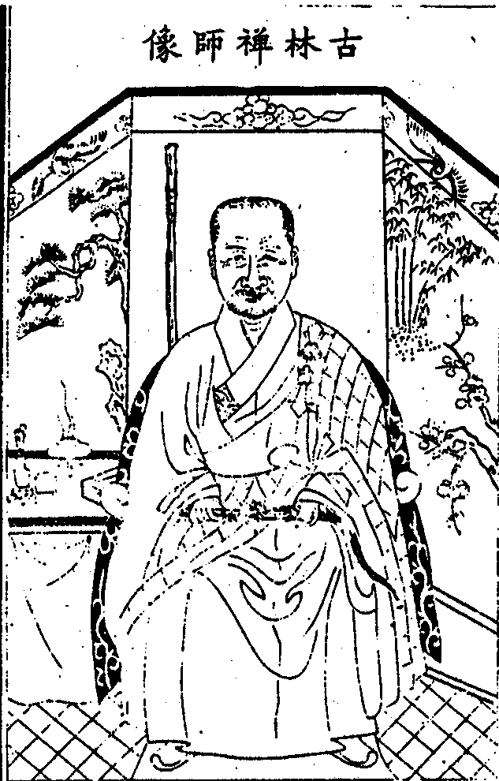

嘉興大藏經 第36冊
No.B346 古林如禪師語錄 (4卷)
【清 機如說 全威等記錄】
第 1 卷
古林禪師像

古林禪師語錄序
吾佛說法四十九年未曾道隻字諸祖出廣長舌遍覆閻浮國土語句如雲蓋過量人建牙豎纛各闢乾坤不可以軌則求也古林和尚秉吹毛劍獨步大方一言半句珠圓玉潤霑著毒氣足以斷人命根其縱橫自在悉從自己胸襟流出不惟不效諸方簇錦攢花并不向佛祖喉下取氣誠闇室之寶炬迷津之慈航也師為竹菴和尚真子機契最湥開法吳門之蓮華寺道眼圓明鉗錘妙密洵足振興車溪金明之法道而有光於斷橋矣門人集其語錄問序於余余合掌曰何必矢上加尖以塗糊吾師乎雖然師之有語師之已形者也語之有錄語之已見者也已形已見者可以言知未形未見者不可以名求則所謂語錄者果安在乎學者不為語言文字所瞞則酬恩有地矣。
康熙癸丑仲春秀水羅真性敬書
古林如禪師語錄目次
自題
者箇村僧神頭鬼臉手執白拂遭他撿點生平吐膽傾心換卻時人雙眼縱有丹青畫得來舌上風雷如電卷
附刻金明師翁讚
縱目皆詩譜條條似古風秋林看不厭獨坐小軒中
辛亥秋蠡湖進老人手書
永正老和尚讚
水心洛洛鐵骨蒼蒼振婁東之新令挽濟北之頹綱揮玉麈天魔膽喪握金篦佛祖輝煌大座道場九會趨蹡龍象諸方嗚呼莫道余舌頭太短實讚之玉出崑崗
壬子春濮溪元老僧書
繼老和尚讚
雲彩正秋舒琅籤響石渠名山富仙跡太史待藏書天馬嘶偏壯霜鍾韻有餘平生霄漢志應袛古人如
為古侄禪師 靈巖儲稿
素巖和尚讚
古寺碧天舒湖山映水渠蓮開唐代瑞石勒竺墳書近睹芳叢振重興惠業餘頹宗今有賴法社自如如
楚山真智草
東崖和尚讚
龍崖真璨草
山容和尚讚
至境難言物不遷帝青珠網豈常縣幻花滅處檀風動垢面清時佛眼旋摩竭令行親嫡骨靈山話在舊因緣剎竿今日重扶起慶喜當年有法傳
大石法弟元昇具
自培尊宿讚
開疆闢土五葉聯鏢太湖波闊納百川潮目視雲漢相國裔表坐震頹綱誰犯秋毫咄活潑潑如盤珠走明歷歷亙赫光曒孤迥迥如峰卓朔峭巍巍志若凌霄
香梵閣心德題
古林如禪師傳
師名機如號古林松江上海縣 欽賜樂壽堂潘相國之裔孫也父號濟寰篤行誠實似上古人母沈賢德徽音著於親族閭里奉長齋信心佛果崇禎壬申年午月之三日誕生師臨產母夜夢手摘蓮華一朵頃之即結實清香馥郁自異覺遂生師師自為兒嬉戲時性好念佛惡食腥血之食及延傳訓讀穎悟超群年將冠父母繼喪師奉柩合葬祖塋遂矢志出家親族阻留者雲集堂中師志決不能強乃將父遺貲悉散之貧族臨行而誓曰吾不得蹤跡源頭為善知識不復寓形宇宙間矣遂飄然而去略無回顧若潛蛟之離幽壑而鯨鰲之縱大海洋洋自得也族黨咸歎曰異哉若子母氏之夢意在斯乎時順治庚寅歲大士誕日即拜投唯一禪師取字道雄晨夕苦行參究焚脩越一載自玉峰至流慶菴參二隱和尚遂披薙名機靈親炙久之繼往浙中遍叩諸方尊宿追尋話頭所至莫不敬契壬寅歲返鹿城選佛場禮參性空和尚乙巳至法輪受具後參婁東藕菴和尚問荅間水乳相合遂付衣拂更名機如號古林蓋丁未年事也師得法後益兢兢守道韞櫝多年戊申春玉峰紳士請住華藏寺師不受退隱嘉禾之金明纂刻佛祖世譜等錄於是嘉禾紳士以濮溪永正禪院請師復辭旋飛錫吳門遇古燈和尚謂師曰公得法藕菴多年連不受請甘踄歷諸方拄杖子無太勞耶師曰藕下兒孫有蓮自發應節順時許多活潑迨庚戌小春吳郡滸關西金墅鎮蓮華禪院席虛山主趙居士子漸仰師高風偕闔郡紳衿本鎮善士具書公請師乃撫杖而笑曰栽藕多時始見蓮耶能無媿乎因就請院本唐朝敕建古剎歲久蔓荒頹廢殆盡樹榦穿檐蘚苔生壁見者莫不蹙額寒心而師則情致悠然了不介意晨經暮課琅琅鐘磬聲無少間也且復躬耕隴畝戴笠披簑刈草為炊磨麩為食又未嘗以清澹為懷勤作為勞也如是者十年大殿鼎新佛像整容前後金彩霞光燦然奪目大非曩日境界此可以徵師之高道隆德有以格龍天而信檀那也雖然師生平所重正不徒是夫固有獨得至詣足以紹佛祖而覺愚蒙者又豈余小子寡聞膚見所能揄揚其萬一哉庚申春師編刻本師藕菴老和尚語錄以酬嗣法志願余小子輩因亦懇師平日語編為四卷同梓以傳師春秋方富精思銳志將來益廣慈悲心奮勇猛力所以雨露寰區甄陶學者正無可量敬述其已然者為余小子輩之模範云。
金墅鎮文學檀越山主公啟
伏以鷲峰直指一燈普照於九垓少室親承五葉流輝於亙古肯堂肯構代有哲人盡善盡美必推宗匠恭惟古林大和尚座下斷橋正傳藕菴嫡子鍾瑞氣於婁東蜚嘉聲於浙右揭開普明鴛老之生面播揚金明介祖之徽猷三千龍象隨高躅正合乘時萬里香雲擁法幢詎宜久晦茲有蓮華禪剎實惟古宿道場建立宗旨壓倒諸方今茲大和尚丕振家風扶起舊案璧合珠連紹箕裘於同室超凡越格震獅吼於遐方某等夙嚮鴻儀渴瞻猊旆雷轟電掣得嘗九轉之丹草偃風行頓脫三生之罥用勒俚箋佇延玉趾伏願高提祖印威風凜而狐犴全消丕展洪爐手段辣而皮膚盡脫將見大匠之門鮮曲木三草二樹而法雨均霑震雷之下無蟄蟲此界彼疆而光風一片某等臨啟曷勝景切之至。
法末張 雋 趙士毅 趙士逵 凌安國
秦 美 趙士偉 黃日起 何一龍
趙士弘 徐 章 趙士俠 蘇宜生
秦嘉斌 程學周 趙 羽 趙士選
惠德敷 汪道忠 惠 和 趙瑾仝頓首拜
蘇州闔郡大護法公啟
伏以一華拈起揭開古佛家風隻履攜歸直示西來祕旨五葉聯鑣於震旦一宗杰峙於滹沱時節既至法道攸彰恭惟古林大和尚座下鍾英泖水毓秀婁江乘願力以再來歷諸方而咸仰親承藕菴衍老之記莂執侍蠡湖介祖之維虔斷橋調古風高赤身擔荷車溪流長源遠獨力仔肩鹿城諸剎每虛席以殷勤檇李名藍咸捧幡而望切師方力行古道為法忘身意將振起頹綱潛蹤苦志顧祖印既已高提而龍天自難蓋覆入廛垂方便原係從上風規寶筏渡迷津未有長行不住惟茲蓮華禪院吾吳首剎尊宿古鄉領一郡關鎮之瑞氣作諸方雲水之津梁烹佛煉祖於前欽承古德開法闡宗於後端賴吾師蓋既烜赫於當時尤望顯揚於今日某等久儀道範佩切皈誠懷瓣香而趨會下勒譾語以表微忱伏願俯鑒凡情慨馳法旆運超方之手眼驅犴勦狐用本分之鉗錘利生接物天龍窺伺無門聖凡乞命有分將見鴛湖嫡派道風遍播寰區蠡水真傳法乳長流永古某等臨啟可勝翹切之至謹啟。
法弟李 模 范 周 繆 彤
彭 瓏 尤 侗 沈世奕
徐乾學 徐秉義 徐元文
申 穟 李 楷 朱 雲
周茂蘭 蔣 埴 陸在新等仝頓首拜
古林如禪師語錄卷一
住蘇州府金墅鎮蓮華禪寺
康熙庚戌仲冬朔旦入院。
伽藍靈聰顯赫輔國護僧一呼百諾速報分明插香祖堂四七二三口帶雌黃何故插香云昔從五鳳樓前過不解思惟坐太平。
據室拈拄杖云豎窮三際橫遍十方聖凡相見喫棒有分何故卓一卓云律令森嚴。
諸大檀護山主耆宿眾等尋懇上堂師至座前拈疏云人天眼目佛祖綱維檀護金湯衲僧法標汝等普聞也須剖露宣畢指法座云這曲木彔床巍巍堂堂龍天推出貴在承當喝一喝便陞座遂拈香云此一瓣香乾坤至大萬德以仁炳向寶爐端為祝延
今上皇帝聖壽無疆萬萬歲欽願垂裳治國海晏河清八方共沐堯風四表同遵舜化次拈香云此一瓣香調和鼎鼐位列三台炳向寶爐奉為
滿朝文武合國勳戚當道尊官紳衿文學遠近檀那護法山主合寺耆宿伏願生生受靈山記莂世世端秉帝心復拈香云此一瓣香忒煞分明天然貴胤把住關津不通凡聖炳向寶爐專為供養傳臨濟正宗三十二世住婁江藕菴堂上法華老人本師和尚用酬法乳斂衣就座永寧白椎云法筵龍象眾當觀第一義師云若論第一義諦非言句所及還有向山僧未出方丈時薦得者出眾相見僧問水壺影鑑舊日風規癖掃煙霞還成窠臼即今條令斬新一句如何舉唱師云太湖三萬六千頃進云恁麼風前不露彩句後絕蹤由師云疊疊青山插遠村進云心心相對眼眼相覷雲門道菴內人不知菴外事因甚乾峰呵呵大笑師云快便難逢進云蓮華堂上果與不同師云合取口好乃云古殿洞開明輝杲日坐振頹綱承誰妙力驀豎拂子云者便是佛佛授手祖祖相傳底一段大事山僧自丁未年間劈頭撞著這老漢一拶直得脫體無私一肩擔荷今因業風吹至蓮華承諸檀護延請住持奈何時不可緩義弗敢辭對眾分明舉揚去也把住也靈光獨耀放行也頭正尾正且問大眾即今還是放行耶把住耶遂揮拂云寒焰發煇充宇宙從教匝地湧蓮華(謝辭不錄)。
復舉淨慈斷橋倫祖上堂云德山低頭夾山點頭俱胝豎起手指頭玄妙[祝/土]破腳指頭拈拄杖云都來不出山僧拄杖頭何以見得卓一卓云一葉落天下秋師云當堂不正坐那赴兩頭機若非具透關眼焉能辨其緇素呈拂子云者一隊老古錐今日被蓮華一串穿卻了也為甚如是一朝權在手便把令來行卓拄杖一下復結椎云諦觀法王法法王法如是便下座。
當晚小參娑婆世界以音聲為佛事香積世界以香飯為佛事金明師翁以破院為佛事蓮華則不然以行門為佛事何故拈香擇火堂前解打禾山鼓緊峭草鞋大家同入雲門普搬石運土發機須用千鈞弩阿呵呵大地原來無寸土便歸方丈。
新春上堂揮拂云春山青疊疊春水緣滔滔靈禽解語萬物同條才子佳人休作景會松岡苔徑且漫崢嶸蓮花一向內不放出外不放入坐斷乾坤又作麼生解嘲良久云浮雲散盡紅輪曜古木參天月挂梢拽拄杖下座。
元旦上堂祝
聖畢拈拂子作吹笙勢云一曲翻來格調新梅花枝上報先春蓮華有句超群象曆日無私降紫宸拂一拂云揮斷七十二峰傾秋倒喝一喝云喝退三萬六千水逆流何故丈夫各有沖霄志豈向他人行處行便下座。
四月八日上堂舉世尊降生時一手指天一手指地周行七步目顧四方乃曰天上天下唯我獨尊古今批判者竟不顧世尊性命祇要各出手眼殊不知救得蝦蟆死了蛇大眾且喜舊案新翻還識釋迦老祖娘生面目麼豎拂子云鉤頭有餌慣釣鯤鯨把住封疆渾身賣悄復揮下座。
中秋脩建大殿落成華嚴經期圓滿眾信勝集請上堂師云法無定相遇緣即宗古跡重光亦須時節此寺自唐朝劉公夫婦捨宅以來千有餘年復得趙居士合家善眷捐資脩葺茲當圓成之日眾善信恭命山僧舉揚大法以為慶賀直得森羅起舞萬象點頭虛空合掌大地和南三世諸佛神通自在以智慧光明威德充滿而令青蓮華藏菩薩住佛無畏入佛法界一一莊嚴一一具足汝等諸人還信得及麼若信得及此處於青蓮華藏世界無二無別現前諸善男子善女人與彼土諸大菩薩無二無別昔日劉公今時趙老亦無二無別其或未然更聽一偈蓮華復現度人舟盡入如來性海遊天香到處秋光好直蹈毘盧最上頭卓拄杖喝一喝下座。
上堂舉雪峰因僧來參峰問甚處來僧云浙中峰云船來陸來僧云二途俱不涉峰云怎得到這裏僧云有甚麼隔礙峰即打趁出僧後十年再來峰云從甚處來僧云湖南峰云湖南與此間相去多少僧云不隔峰舉拂云還隔這箇麼僧云若隔怎得到這裏峰亦打出僧住菴後每見人必罵雪峰同行聞特去相訪遂問你因甚罵雪峰這僧舉前兩段因緣同行痛罵與伊點破這僧遂悲泣每於中夜焚香望雪峰禮拜師云雪峰與麼為人但有殺人劍無活人刀那同行點破矢上加尖漏逗不少這僧當時罵而今哭兩頭三面自起自倒蓮花今日據款結案各與三十拄杖何故聻劍為不平離寶匣藥因救病出金缾便下座。
佛誕日開光趙山主室人吳氏法名全元請上堂撲面熏風四月天黃鶯啼出柳枝煙座下若有英靈客何必山僧費口涎豎拂子云今朝初八聖誕節我佛出頭便饒舌叵耐旁觀惡水澆這點光明無間歇趙氏全元請舉揚拔盡諸人眼中楔時雨紛紛正令提箇事明明難辨別休辨別香煙堆裏金鳳飛紅炬光中玉龍抉高聲召眾云諸人還見麼遂擲下拂子復舉南泉和尚云王老師自小養一頭水牯牛擬向溪東牧未免犯他國王水草擬向溪西牧未免犯他國王水草不如隨分納些些師云王老師恁般提唱固是可嘉未免犯他國王水草爭如蓮華日用拖犁耙拽將松岡下八角井邊一片田地翻來覆去夏種秋收脫粟香糜快樂自在豈不勝他王老師一頭地眾中倘有箇漢出來道和尚是甚麼心行卓拄杖云你也出者圈繢不得呵呵大笑下座。
上堂舉凌行婆問浮杯盡力道不得底句分付阿誰杯云浮杯無剩語婆云未到浮杯不妨疑著杯云更有長處不妨拈出婆斂手哭云蒼天中更添怨苦杯無語婆云語不知偏正理不識倒邪為人則禍生後僧舉南泉泉云苦哉浮杯被這老婆推折一上婆聞得笑云王老師猶少機關在時有幽州澄一禪客詣婆乃問南泉為甚少機關婆哭云可悲可痛澄罔措婆云會麼澄合掌而立婆云伎死禪和如麻似粟後澄一舉似趙州州云我若見這臭老婆問教伊口啞一云未審和尚作麼生問伊州便打一云為甚卻打某甲州云似這般伎死禪和不打更待何時婆聞云趙州合喫婆手中棒州聞哭云可悲可痛婆聞歎云趙州眼光爍破四天下州聞令人去問如何是趙州眼婆豎起拳僧回舉似趙州州乃有頌與婆云當機覿面提覿面當機疾報爾凌行婆哭聲何得失婆有頌答云哭聲師已曉已曉復誰知當時摩竭令幾喪目前機師云這婆子將此一問直得放火燒山總成妖怪浮杯雖則謙恭益遜不無閉門種火南泉一語也似火上添油趙州救火看樓打樓若無澄一焦頭爛額如何圓得此案還有息火者麼良久云輪得自己贏得他人擲拄杖下座。
因吳氏全元送法衣上堂師舉衣云華頂家聲遠車溪法脈長鴛湖流此地蓮花遍界香昔者龍女獻珠世尊納受即證菩提今日全元供衣山僧承受且道是同是別良久搭衣云體段分爻象羅紋挂福田便下座。
上堂拈拄杖云有物先天地無形本寂寥能為萬象主不逐四時凋復卓一卓云喚則拄杖子則觸不喚作拄杖子則背諸人試撿點看若是隨陰陽消長寒暑變遷總屬枝上牽枝蔓上引蔓莫為汝等打葛藤去也驀卓杖云鴛鴦繡出從君看不把金鍼度與人下座。
端陽上堂今朝五月五便是端陽節咒水與書符赤口盡消滅別別艾虎龍舟最親切蓮華更有一句子不向諸人說且道那一句良久云角黍大如錐榴花紅映月下座。
觀音聖誕眾設供請上堂雀噪鴉鳴盡入觀音妙裏水流風動無非佛祖真機若將耳聽瞎卻諸人眼若將眼覷塞卻諸人耳不見雲門道聞聲悟道見色明心觀音菩薩將錢買胡餅放下手來卻是饅頭又作麼生慶讚擊拂子云普門示現神通力海晏河清一并收下座。
上金明寺介菴先老和尚供師云范蠡湖頭建法幢立宗旨四海之內無不共聞到今撒手敢獻香糜仰企師翁先老和尚本無生滅豈有去來祗如末後垂恩一句又作麼生遂插香云大法痛心難話會兒孫到此亦觀瞻展具禮拜。